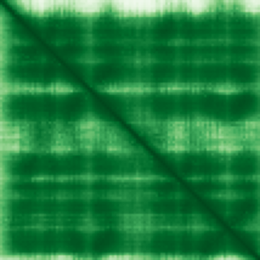
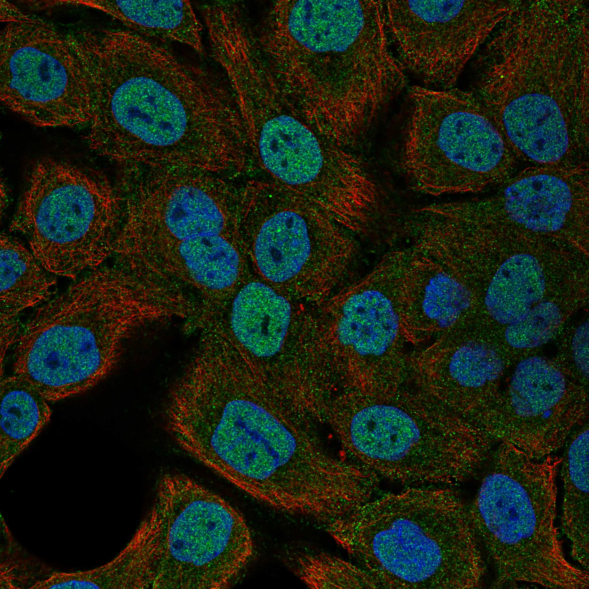
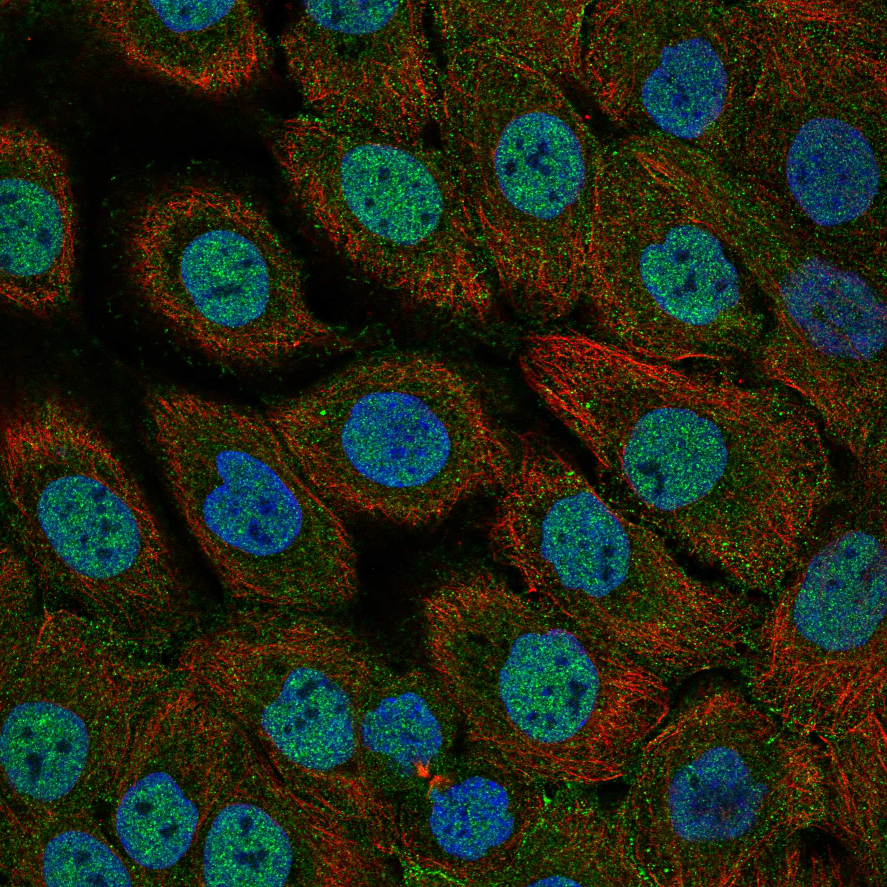

type: protein-evaluation gene: "MTCP1" date: 2026-06-01 tags: [protein-scout, nuclear-protein, evaluation] status: scored ---
MTCP1 核蛋白评估报告
1. 基本信息
| 项目 | 内容 |
|---|---|
| 基因名 / 别名 | MTCP1 / C6.1B |
| 蛋白全名 | Protein p13 MTCP-1 (Mature T-cell proliferation 1) |
| 蛋白大小 | 107 aa / 12.6 kDa |
| UniProt ID | P56278 (MTCP1_HUMAN) |
| 评估日期 | 2026-06-01 |
2. 评分总览 (权重: 核×4 大×1 新×5 结×3 域×2 PPI×3 /1.83)
| 维度 | 得分 | 加权 | 加权后 | 关键证据摘要 |
|---|---|---|---|---|
| 核定位特异性 | 5/10 | ×4 | 20 | HPA: Nucleoplasm (Approved, 主定位)+Plasma membrane; UniProt: 无亚细胞定位; GO-CC: 无; 仅HPA IF支持核定位 |
| 蛋白大小 | 3/10 | ×1 | 3 | 107 aa / 12.6 kDa, 极小蛋白, 远低于200-300理想区间 |
| 研究新颖性 | 6/10 | ×5 | 30 | PubMed 58篇; ≤60区间 |
| 三维结构 | 9/10 | ×3 | 27 | PDB: 1A1X(2.00A X-ray)+1QTT(NMR)+1QTU(NMR); AF pLDDT 86.2(48.6%>90); PDB+AF双重验证 |
| 调控结构域 | 4/10 | ×2 | 8 | TCL1/MTCP1 family domain (IPR004832); beta-barrel fold; 无DNA-binding/修饰结构域 |
| PPI | 4/10 | ×3 | 12 | STRING: AKT1(0.97, exp 0.51)+AKT2(0.919)+TCL1A(0.911); IntAct:15条含EWSR1+COX17等; AKT信号传导 |
| 互证加分 | — | — | +0.5 | PDB+AF双向结构验证; HPA核定位(Approved) |
| 原始总分 | 100.5/180 | |||
| 归一化总分 | 54.9/100 |
3. 详细分析
3.1 核定位证据
| 来源 | 定位 | 可信度 |
|---|---|---|
| HPA (IF) | Nucleoplasm (Approved, 主定位), Plasma membrane (附加) | Approved |
| UniProt | 无亚细胞定位注释 | — |
| GO-CC | 无GO-CC注释 | — |
IF 图像: HPA有IF展示图(4细胞系: A-431, U2OS, U-251MG, Hep-G2)，Nucleoplasm定位，可靠性Approved。
结论: MTCP1的核定位仅依赖于HPA IF数据(Approved可靠性)。UniProt和GO-CC均无定位注释，这构成了重大不确定性。HPA Approved表示至少两种独立抗体验证了核质定位。但UniProt/GO的数据空白意味着核定位的生物学验证不足。评分5分。
3.2 蛋白大小评估
评价: 107 aa / 12.6 kDa，是极小的蛋白。远低于200-800 aa理想区间。小尺寸限制结构域丰富度和潜在功能多样性。但小蛋白易于重组表达和结构解析。评分3分。
3.3 研究现状
| 指标 | 数值 |
|---|---|
| PubMed strict | 58 |
| PubMed broad | 88 |
| Chromatin/epigenetics 比例 | 0% |
主要研究方向:
- T细胞前淋巴细胞白血病(T-PLL): MTCP1通过t(X;14)(q28;q11)染色体易位激活
- CMML/AML中的GATAD2B-MTCP1和KANSL1-MTCP1融合
- AKT1/AKT2磷酸化增强功能
- CLL中t(X;14)(q28;q32)易位
关键文献: 1. Walker JS et al. (2021). "Rare t(X;14)(q28;q32) translocation reveals link between MTCP1 and chronic lymphocytic leukemia." *Nat Commun*. PMID: 34732719 2. Li SX et al. (2020). "Identification of a t(X;17)(q28;q21) generating a KANSL1-MTCP1 gene fusion leading to dysregulated expression of MTCP1 in acute myeloid leukemia." *Genes Chromosomes Cancer*. PMID: 32167630 3. Liu YZ et al. (2025). "Identification of t(X;1)(q28;q21) generating a novel GATAD2B::MTCP1 gene fusion in CMML and its persistence during progression to AML." *Hematology*. PMID: 39696784 4. Dearden CE (2006). "T-cell prolymphocytic leukemia." *Med Oncol*. PMID: 16645226 5. De Schouwer PJ et al. (2000). "T-cell prolymphocytic leukaemia: antigen receptor gene rearrangement and a novel mode of MTCP1 B1 activation." *Br J Haematol*. PMID: 11054065
评价: 58篇PubMed集中于血液肿瘤学(白血病/淋巴瘤)。MTCP1的chromatin/epigenetics研究为0。然而值得注意的是，MTCP1与GATAD2B(核小体重塑和去乙酰化酶NuRD复合体组分)和KANSL1(NSL组蛋白乙酰转移酶复合体组分)形成致癌融合，暗示MTCP1可能与chromatin调控因子存在功能互动。评分6分。
3.4 三维结构分析
| 指标 | 数值 |
|---|---|
| AlphaFold 平均 pLDDT | 86.2 |
| pLDDT >90 占比 | 48.6% |
| pLDDT 70-90 占比 | 44.9% |
| pLDDT <50 占比 | 2.8% |
| 可用 PDB 条目 | 3 (1A1X/1QTT/1QTU) |
PDB详情:
- 1A1X: X-ray 2.00A, 全长(2-107), 高分辨率
- 1QTT: NMR, 全长(1-107), 溶液结构
- 1QTU: NMR, 全长(1-107), 溶液结构
PAE 图: 
评价: 结构质量极优。3个PDB实验结构(高分辨率X-ray+NMR双验证)，覆盖全长蛋白。AlphaFold pLDDT=86.2, 仅2.8%无序。折叠为8-stranded beta-barrel结构，与TCL1家族蛋白高度相似。是极优秀的结构和生物物理研究靶点。评分9分。
3.5 结构域分析
| 来源 | 结构域 |
|---|---|
| UniProt | 无 |
| InterPro | IPR004832 (TCL1/MTCP1 family); IPR036672 (TCL1/MTCP1 superfamily) |
| Pfam | PF01840 (TCL1/MTCP1 family) |
调控潜力分析: MTCP1属于TCL1/MTCP1蛋白家族，折叠为8-stranded beta-barrel结构。该家族蛋白(TCL1A/TCL1B/MTCP1)通过与AKT1/AKT2直接结合增强其磷酸化和激酶活性。MTCP1通过AKT增强促进细胞增殖和存活。无DNA-binding结构域或chromatin修饰酶活性。其与chromatin的潜在关联源于GATAD2B(NuRD组分)和KANSL1(NSL组分)融合事件，但野生型MTCP1是否直接与chromatin调控因子互作未知。评分4分。
3.6 PPI 网络
实验验证互作 (IntAct, 15条):
| Partner | 方法 | PMID | 功能类别 | 调控相关？ |
|---|---|---|---|---|
| EWSR1 | Y2H pooling | 16189514 | RNA-binding, transcriptional regulation | 间接(转录) |
| CMC4 | anti tag coIP | 33961781 | Mitochondrial | 否 |
| COX17 | Y2H pooling | 16169070 | Cytochrome c oxidase assembly | 否 |
| SCO1 | BioID | 29568061 | Mitochondrial | 否 |
| AIFM1 | BioID | 29568061 | Apoptosis | 否 |
| CHCHD1 | pull down | 23902751 | Mitochondrial | 否 |
STRING 预测互作 (combined score >0.4):
| Partner | Score | 功能类别 | 调控相关？ |
|---|---|---|---|
| AKT1 | 0.970 (exp 0.51) | Pro-survival kinase | 信号传导 |
| AKT2 | 0.919 (exp 0.23) | AKT kinase | 信号传导 |
| TCL1B | 0.912 (database 0.9) | TCL1 family | 否(同源) |
| TCL1A | 0.911 (database 0.9) | TCL1 family, AKT coactivator | 否(同源) |
| AKT3 | 0.900 (database 0.9) | AKT kinase | 信号传导 |
PPI 评价: 核心PPI为AKT1/2/3激酶增强。AKT1为实验验证(database+experimental)。TCL1A/TCL1B为同家族蛋白。IntAct含EWSR1(RNA结合蛋白, 参与转录调控)但为高通量Y2H。大部分IntAct互作为线粒体相关蛋白(SCO1/AIFM1/COX17)，可能反映BioID实验的定位偏好。PPI整体以AKT信号传导为主，chromatin/epigenetic关联极少。评分4分。
4. 总体评价
推荐等级: 2星 (54.9/100)
核心优势: 1. 结构极优: 3个PDB实验结构(2.0A X-ray+NMR)+AlphaFold pLDDT 86.2 2. 蛋白极小(107aa)但折叠完整，是理想的结构-功能研究靶点 3. GATAD2B和KANSL1融合事件暗示chromatin调控潜力
风险/不确定性: 1. 核定位仅依赖HPA IF，UniProt/GO无任何定位信息 2. 蛋白极小(107aa)，结构域简单(beta-barrel adaptor) 3. 无DNA-binding或chromatin修饰酶活性 4. AKT信号传导与chromatin调控无直接关联 5. 血液肿瘤背景限制了在TE调控研究中的适用性
下一步建议:
- [ ] 独立验证核定位(GFP-MTCP1融合)
- [ ] 解析GATAD2B-MTCP1融合蛋白的chromatin靶向机制
- [ ] 鉴定核内MTCP1结合蛋白(IP-MS)
5. 数据来源
- UniProt: https://www.uniprot.org/uniprotkb/P56278
- Protein Atlas: https://www.proteinatlas.org/ENSG00000214827-MTCP1
- PubMed: https://pubmed.ncbi.nlm.nih.gov/?term=MTCP1
- AlphaFold: https://alphafold.ebi.ac.uk/entry/P56278
- STRING: https://string-db.org/ (MTCP1)
- IntAct: https://www.ebi.ac.uk/intact/
HPA IF 状态: HPA IF 图像已本地嵌入。
 
PPI 网络
| Partner | Source | Score/Evidence |
|---|---|---|
| AKT1 | STRING | 0.97 |
| AKT2 | STRING | 0.919 |
| TCL1B | STRING | 0.912 |
| TCL1A | STRING | 0.911 |
| AKT3 | STRING | 0.9 |
| EWSR1 | IntAct | psi-mi:"MI:0398"(two hybrid po |
| SCO1 | IntAct | psi-mi:"MI:1314"(proximity-dep |
| SFXN1 | IntAct | psi-mi:"MI:1314"(proximity-dep |
PAE 图像暂无数据（未生成本地图片或未可靠获取），结构判断基于AlphaFold pLDDT统计。